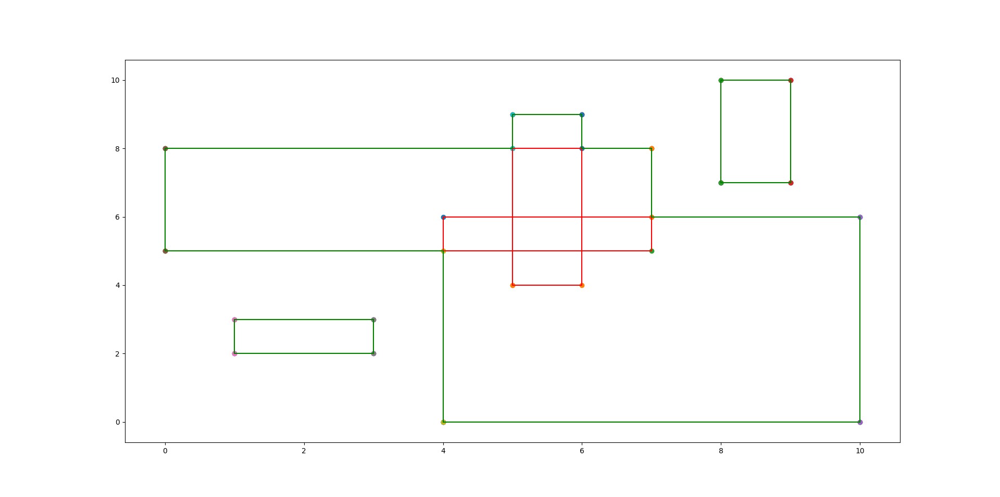

Input 13
5
4 0
10 6
5 4
6 9
0 5
7 8
8 7
9 10
1 2
3 3
Output 13
Measure = 60
Number of Contour Lines = 20
Contour Line Segments:-
4 0 10 0
1 2 3 2
1 3 3 3
0 5 4 5
7 6 10 6
8 7 9 7
6 8 7 8
0 8 5 8
5 9 6 9
8 10 9 10
0 5 0 8
1 2 1 3
3 2 3 3
4 0 4 5
5 8 5 9
6 8 6 9
7 6 7 8
8 7 8 10
9 7 9 10
10 0 10 6
Contour Length = 52
